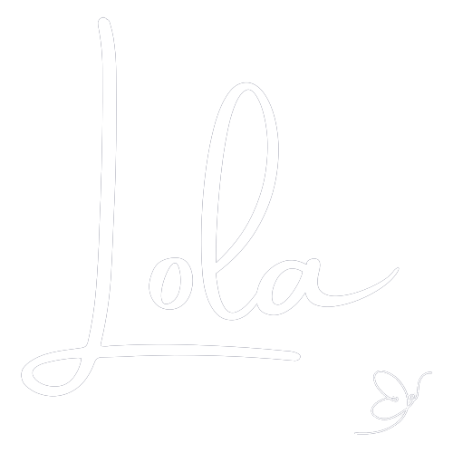

<nav class="navbar navbar-expand-lg toolbar">
  
  <button
    class="navbar-toggler"
    type="button"
    data-toggle="collapse"
    data-target="#navbarTogglerDemo02"
    aria-controls="navbarTogglerDemo02"
    aria-expanded="false"
    aria-label="Toggle navigation"
  >
    <span class="navbar-toggler-icon"></span>
  </button>

  <div class="collapse navbar-collapse menu" id="navbarTogglerDemo02">
    <ul class="navbar-nav mr-auto mt-2 mt-lg-0 navbar-style">
      
      <li class="nav-item navbar-style">
        <a class="nav-link navbar-style" routerLink="part-one">Part 1</a>
      </li>
      <li class="nav-item navbar-style">
        <a class="nav-link navbar-style" routerLink="part-two">Part 2</a>
      </li>
    </ul>
  </div>
  
</nav>

  <router-outlet></router-outlet>